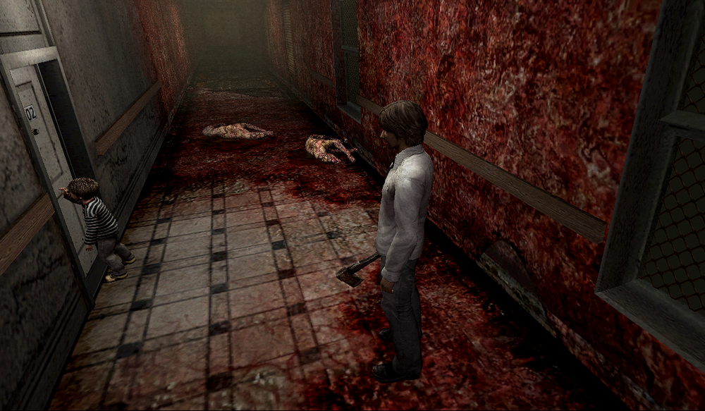
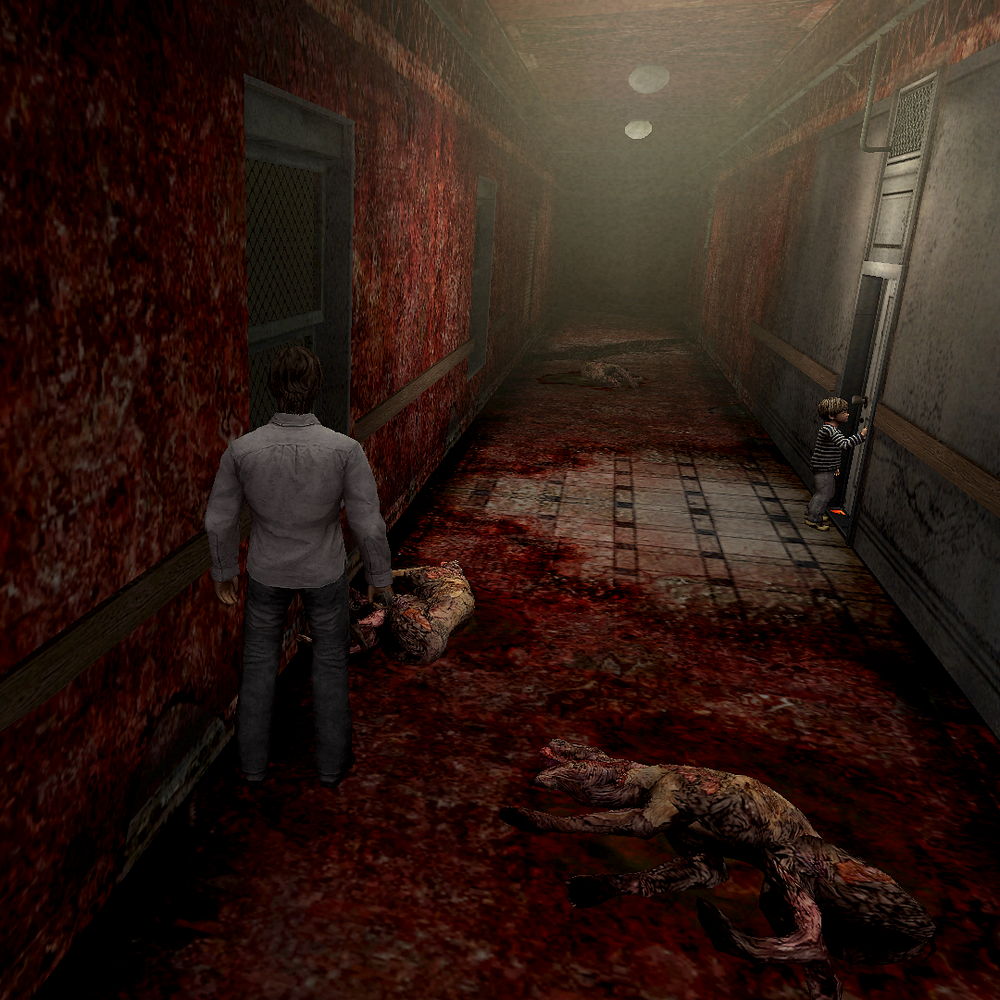
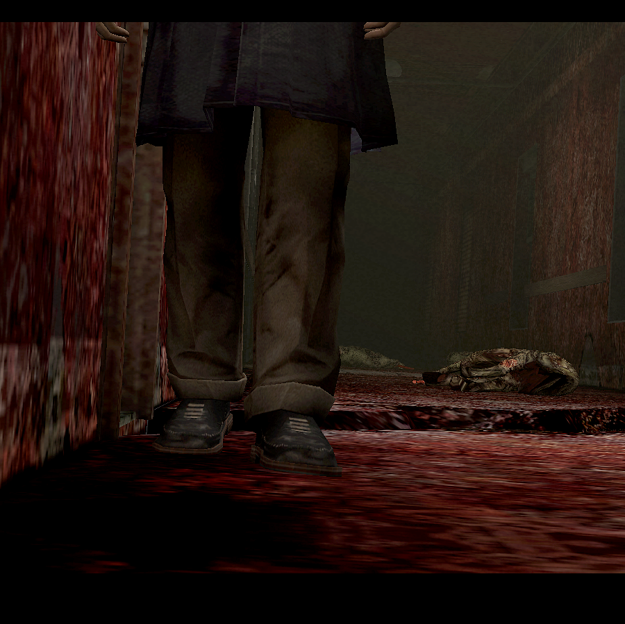

[SH4] Who Took Down the Dogs?

Who's the Strongest Character in This Game? Hahaha.
![[SH4] Who Took Down the Dogs?](img/da50.png)
This is a mirror of the DeviantArt version linked above, provided as a backup and for easier access.


Right after the Apartment World begins, when you (Henry) wake up in front of Room 301, you see little Walter banging on the door of Room 302. And lying in the hallway are four dead Sniffer Dogs.
There was this running joke that maybe little Walter just beat them all up with his bare hands. Like, what if he's actually stronger than Henry who's carrying a weapon—?
But if we're being reasonable, it was probably Walter, since there were already dead dogs lying around in the previous cutscene.

At this point, the self kidnapping incident hasn't happened yet, so little Walter doesn't know Walter's true identity. But Walter does know, so if he actually cleared the way just so his younger self could go meet his mom, that's kind of sweet.
Still, I'm casting my vote for the "little Walter took them down bare-handed" theory. Hahaha.